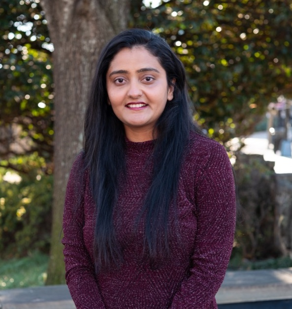
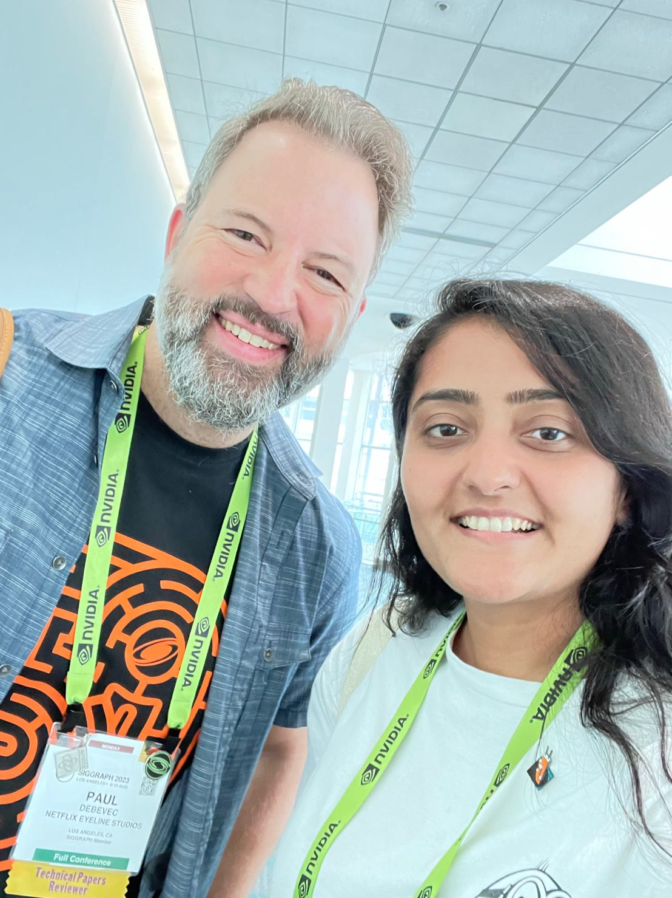
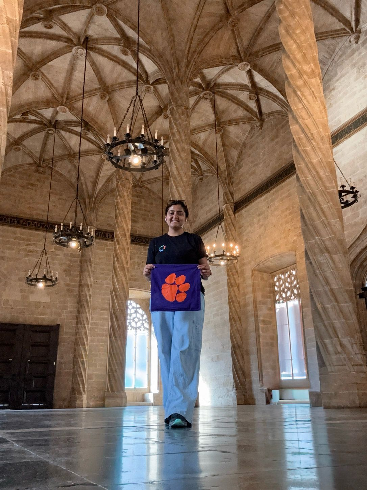

Ph.D. in Computer Science
Expected Dec 2026
Clemson University · Clemson, SC
Advised by Dr. Daljit Singh Dhillon; published at SIGGRAPH, ICVGIP, and Pacific Graphics. Marketing Director, SOC Graduate Student Association (Spring 2025).
Ph.D. Candidate, Computer Science — Clemson University
I develop accurate, computationally efficient models for reconstructing the spectral properties of illuminants — work that strengthens data-driven inverse rendering pipelines for structural color effects such as diffraction, refraction, and iridescence, with applications in simulated environments, computer vision, and 3D scene reconstruction.

Expected Dec 2026
Clemson University · Clemson, SC
Advised by Dr. Daljit Singh Dhillon; published at SIGGRAPH, ICVGIP, and Pacific Graphics. Marketing Director, SOC Graduate Student Association (Spring 2025).
Aug 2020
Virginia Tech · Blacksburg, VA
Best Summer Research Award (UCAL-JAP) for a wildfire-spread prediction framework using hyperspectral imagery, with Dr. Brian Lattimer.
May 2017
Pandit Deendayal Energy University · Gandhinagar, India
Motor Control lead, Shell Eco-marathon (Team Kaizen); Treasurer, IEEE Student Chapter; Technical Chair, Mind Ripple Quiz Club.
Aug 2022 – Present
Clemson University · Clemson, SC
Researching inverse rendering of structural materials — predicting illumination SPD for 2D-to-3D scene reconstruction, robust spectral color correction, and calibrated material-capture datasets (VarIS). Also implemented anisotropic BRDF hair models (Kajiya–Kay, Marschner) and improved traffic-image segmentation.
Aug 2020 – Jul 2021
MPower Logic, Inc. — State Farm · Bloomington, IL
Built React front-ends and REST APIs for State Farm's customer-facing tools, using A/B testing and cloud-integrated CI/CD in an Agile workflow.
Aug 2019 – Aug 2020
Extreme Environments and Materials Lab, Virginia Tech · Blacksburg, VA
Built a ROS-based LiDAR/RGB-D sensor-fusion system for autonomous lab delivery, and a transpose-CNN wildfire prediction model reaching 96% accuracy — improving validation loss by 18% through Adam optimization and dropout.
May 2019 – Aug 2019
UCAL-JAP Systems Ltd. · Chennai, India
Built a YOLOv3 drone object-detection simulation in ROS and Python, achieving over 85% mAP.
Aug 2017 – Dec 2017
National Infotech · Surat, India
Designed an STM32F4-based BLDC motor controller and analyzed performance under load through simulation.
Jun 2016 – Jul 2016
Transformers and Rectifiers · Ahmedabad, India
Supported SLA monitoring systems and transformer manufacturing processes.
Clemson University (2021–present): TA for Advanced Machine Learning, Design of Algorithms, Discrete Structures, and Computational Thinking.
Virginia Tech (2018–2020): TA for Fundamentals of Information Security; grader and tutor for circuits and calculus courses.
Accurate Spotlight Spectra Estimation Using Neural Methods and Compact Disc Diffraction Gratings
Learning-Based Accurate Estimation of Spot-light Illuminant Spectra using Diffraction Gratings on CD-ROM
Improving Convergence of Fourier Optical Shading for Nanostructural Diffraction
Practical and Accurate Reconstruction of an Illuminant's Spectral Power Distribution for Inverse Rendering Pipelines
arXiv:2410.22679 ↗Robust Color Correction for Preserving Spatial Variations in Photographs
doi.org/10.1145/3588028.3603681 ↗Robust Distribution-aware Color Correction for Single-shot Images
doi.org/10.1111/cgf.14959 ↗VarIS: Variable Illumination Sphere for Facial Capture, Model Scanning, and Spatially Varying Appearance Acquisition
doi.org/10.2312/stag.20231292 ↗May 2025
Earned the AWS Certified Cloud Practitioner certification.
Spring 2025
Appointed Marketing Director of the SOC Graduate Student Association at Clemson.

2024
Paper accepted at ICVGIP 2024 in Bangalore, on spectral power distribution reconstruction for inverse rendering.

2023
Presented a poster at SIGGRAPH 2023 in Los Angeles on robust color correction.

2023
Co-authored VarIS, presented at STAG 2023 in Matera, Italy.